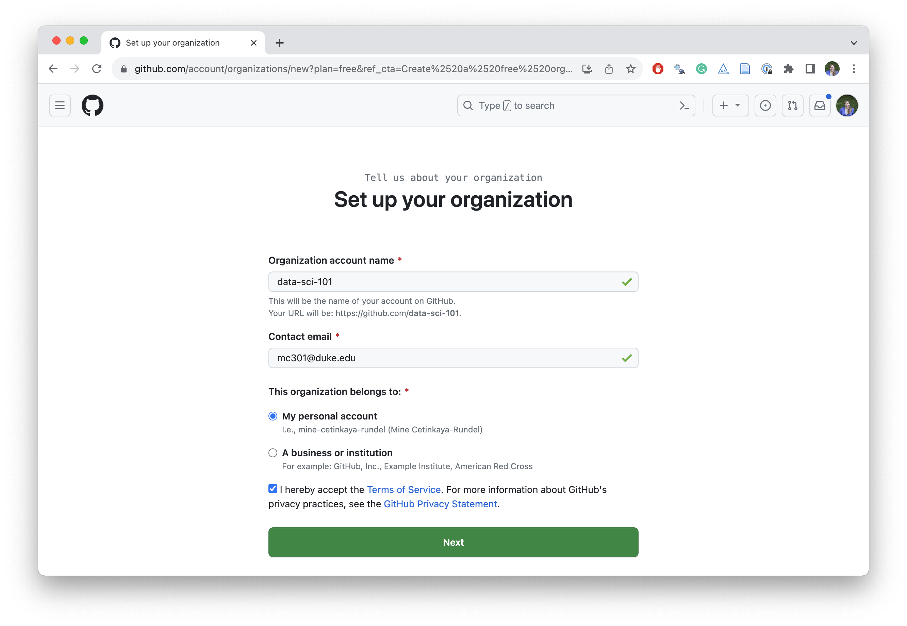

Teaching data science with Git and GitHub
posit::conf(2023)
Teaching Data Science Masterclass
Reproducibility in the classroom
If you haven’t yet done so
Please complete the survey collecting your GitHub user names!
Reproducibility checklist
- Are the tables and figures reproducible from the code and data?
- Does the code actually do what you think it does?
- In addition to what was done, is it clear why it was done? (e.g., how were parameter settings chosen?)
- Can the code be used for other data?
- Can you extend the code to do other things?
Ambitious goal + many other concerns
We need an environment where
data, analysis, and results are tightly connected, or better yet, inseparable
reproducibility is built in
- the original data remains untouched
- all data manipulations and analyses are inherently documented
documentation is human readable and syntax is minimal
Roadmap
- Scriptability \(\rightarrow\) R - ✅
- Literate programming (code, narrative, output in one place) \(\rightarrow\) Quarto - ✅
- Version control \(\rightarrow\) Git / GitHub – this module!
Version control with Git + GitHub
Why Git + GitHub?
- Version control: Lots of mistakes along the way, need ability to revert
- Collaboration: Platform that removes barriers to well documented collaboration
- Accountability: Transparent commit history
- Early introduction:
- Mastery takes time, earlier start the better
- Marketability in industry
Goals
In addition to teaching good (and popular) data science workflows:
Centralize the distribution (and collection) of all student assignments
Enable students to work collaboratively
Make Git and GitHub part of student workflow
Put students on a smooth path to open publishing of their project outputs
GitHub as your Learning Management System
Basic Structure
Setting up a course
- Create a free course organization on GitHub: github.com/organizations/new
- Get verified as a teacher: https://education.github.com/discount_requests/application
- Once verified, upgrade your organization for free: https://education.github.com/globalcampus/teacher
- Set member privileges in organization
- Invite students to organization
- Create assignment(s)
- Collect assignments(s)**
- Grade assignment(s)**
1️⃣ Create course organization
Select the option for a free course organization.
2️⃣ Get verified as a teacher
Required information
You will need to provide the following to request teacher benefits:
A brief description of how you plan to use GitHub
Establishing connection to an academic institution by verifying with a school-issued email address + school ID or some other proof of academic affiliation
Information about the school - link to website, address, etc.
Request verification early
Verification is manual and can take up to a few days, do it well before your semester begins!
3️⃣ Upgrade your organization
4️⃣ Set member privileges
4️⃣ Set member privileges
4️⃣ Set member privileges
5️⃣ Invite students
Working with the GitHub UI can get tedious…
Once you’ve set up your organization, automate redundant tasks by working directly with GitHub’s immensely rich API!
And do so from the comfort of your own home, i.e., using R.
Managing your GitHub organization with üì¶ ghclass
üì¶ ghclass
Tools for managing github class organization accounts
- Made for instructors who use GitHub for class management, e.g., assignments distributed via GitHub repositories
- The package assumes that you’re an R user, and you probably teach R as well, though that’s not a requirement since this package is all about setting up repositories with the right permissions, not what your students put in those repositories
Collect data from students
Need students’ GitHub
github_namesat a minimumRecommend also collecting their emails, as students tend to make typos in their GitHub
github_nameYou can also use the
user_exists()function to check for validity of usernames your students provide
Prior to collecting data…
You need to instruct students to create GitHub accounts
Consider data privacy rules of institution / country (e.g., you may need to enter a data protection agreement for GDPR compliance)
Give some guidance for choosing a github_name
- See “github_name Advice” on Happy Git with R: happygitwithr.com/github-acct.html
Can have students choose and submit github_name as an in-class activity during the first week of classes
Behind the scenes: GitHub tokens
ghclass uses the GitHub API to interact with your course organization and repos - the API verifies your identity using a personal access token which must be created and saved in such a way that ghclass can find and use it.
- Create a token
- Once created, save the
GITHUB_PATusing
Behind the scenes: GitHub tokens
- If the token is found and works correctly the following code should run without error
✖ Your GitHub PAT failed to authenticate.└─GitHub API error (403): Resource not accessible by integration- If instead the token is invalid or not found, you will see something like the following
Inviting students
Invite students
- This will generate an email to students.
- Instruct students to check their email and follow the instructions.
## ✔ Invited user 'florence-nightingale' to org 'data-sci-101'.
## ✔ Invited user 'web-dubois' to org 'data-sci-101'.Check member status
- Who is already in?
- Who still didn’t accept their invitations?
All students should accept invites
It’s recommended that all students accept their invite before you start creating repos for them so that they’re all “members” not “outside contributors” – will make book keeping easier for you as an instructor.
Creating assignments
Creating assignments - big picture
- Create a starter repo, keep it private and make it a template
- Clone the repo and add any starter files (template qmd, data, instructions, etc.)
- Commit and push your changes to the repo
- Use the
org_create_assignment()function to create copies of the starter repo with correct permissions for each of your students (or teams)
Creating your starter repo

Make your starter repo a template
Prepare your starter repo
Demo:
- Create a new repo:
hw-1 - Clone it locally
- Add any necessary files
- Commit and push
Create assignments
Demo:
- Invite everyone to the course organization
- Create a copy of the starter repo for each student, appending the student’s
github_nameto the repo name - Give write access to each student for their own repo
No, seriously…
Make your starter repo a template
You will regularly forget to do this, but try not to. It makes the next step A LOT faster, which is important especially for larger courses.
If the starter repo is not a template,
org_create_assignment()first clones the repo locally, than pushes to GitHub, which is slow.If the starter repo is a template,
org_create_assignment(), copying happens on GitHub, which is a lot faster (and you can also use the GitHub UI to make copies on the fly)
Your turn!
Your role: Student
Set the scene: You’re a student in my class who is about to start working on their first assignment that requires the use of Git and GitHub. In this class, you access RStudio via Posit Cloud, which means your Posit Cloud account should be able to interact with your GitHub account.
Connect your Posit Cloud and GitHub accounts:
- Go to Posit Cloud and log in.
- Click on your profile avatar (top right) and then click on “Authentication”.
- Under Login Options, check the box for “Enabled”. This will open another window where you should click on “Authorize rstudio”.
- Then, go back to the Posit Cloud authentication page, and check the box for “Private repo access also enabled”.
Authorize Posit Cloud for your GitHub organization

Your turn!
Your role: Student
- Go to the course organization on GitHub: github.com/data-sci-101.
- Locate your HW 1, read through the Getting Started section, follow the instructions.
- If there is no GitHub repo created for you for this assignment, let me know!
- Clone the repo using HTTPS.
- Then, go through the Hello Git and Warm up sections.
- Add your answer to Question 1, then commit and push again.
15:00
Create team assignments
Demo:
Create a copy of the starter repo for each team, appending the their
team_nameto the repo nameGive write access to each student in a team for their own team repo
Your turn!
Your role: Student
Go to the course organization on GitHub: github.com/data-sci-101.
Locate your Lab 1, read through the Getting Started section, follow the instructions with your team members.
- If there is no GitHub repo created for you/your team for this assignment, let me know!
Clone the repo using HTTPS – each person in a team should do this.
Discuss Question 1 as a team, identify one team member as the scribe, and have them write up the answer and commit and push.
Then, have all other team members pull that change.
10:00
Giving feedback
Options for giving feedback on GitHub
Use the GitHub UI to add issues to each student’s repo
Instructors (and TAs) can view all repositories within the course organization with their
ownerrole in a GitHub organizationMake sure to
@mention the student so that they are notified when an issue is openedConsider keeping points out of issues
Your turn!
Your role: Instructor
- First, I’ll change everyone’s permission level and make you
owners. (Please don’t delete any repos!) - Go to the GitHub organization for our “class” and observe that now you can see all repos.
- Go into the individual repo (HW 1) for your neighbor. Open an issue and add some text to the issue. In the issue
@mention theirgithub_name. Submit your issue.
Your role: Student
Check your email to confirm that you got notified of an issue being filed by your neighbor in your repo, then review the issue in on GitHub.
10:00
Other ghclass functionality
Git + GitHub lessons learned
- If you plan on using git in class, start on day one, don’t wait until the “right time”
- First few assignment should be individual, not team based, to avoid merge conflicts
- Students need to remember to pull before starting work
- Use GitHub through the RStudio IDE, not command line to keep scope narrow
- Remind students on that future projects should go on GitHub with PI approval
Leverage the ecosystem even further
Trigger a GitHub action every time a student pushes to their repo to render their document and provide high level “rendered / didn’t render” type feedback automatically
Fetch artifacts from actions to obtain (and grade) an independently, automatically rendered version of students’ work for a high fidelity check on reproducibility
More resources
ghclass documentation
Implementing version control with Git and GitHub as a learning objective in statistics and data science courses
Beckman, M. D. et. al. (2021). Implementing version control with Git and GitHub as a learning objective in statistics and data science courses. Journal of Statistics and Data Science Education, 29(sup1), S132-S144. https://doi.org/10.1080/10691898.2020.1848485
The various approaches described in the article span different implementation strategies to suit student background, course type, software choices, and assessment practices. By presenting a wide range of approaches to teaching Git, the article aims to serve as a resource for statistics and data science instructors teaching courses at any level within an undergraduate or graduate curriculum.
üîó pos.it/teach-ds-conf23 / Module 2